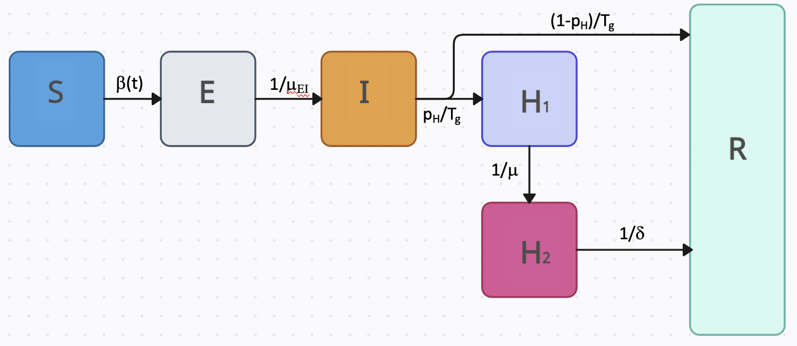

PROF A Package for Respiratory Disease Open-source Forecasting
Welcome to the documentation site for the PROF package. PROF is an R package (with Fortran code) designed for fitting and forecasting infectious disease incidence. The package takes in publicly-available confirmed hospital admission data, fits mechanistic models to the data, and provides short-term probabilistic forecasts.
Currently, the package supports fitting and forecasting the individual and combined burden of influenza and COVID-19 at the state level. Susceptible-Infectious-Hospitalized-Recovered (SIRH) and Susceptible-Exposed-Infectious-Hospitalized-Recovered (SEIRH) models are employed to fit the two pathogens, and both models utilize a flexible, time-dependent transmission term. A baseline statistical model can also be used to fit and forecast each pathogen.
In the case of a mechanistic compartmental fitting, once the user selects a state and either one or both viruses, the PROF fitting procedure iteratively determines the joint posterior distribution of model parameters. This joint posterior distribution is then used with the model to generate location-specific probabilistic forecasts of the near-term number of hospital admissions.
If both viruses are chosen, this procedure is repeated, and the total hospital burden forecast is estimated by combining the trajectory profiles of each disease in multiple ways, including random, ordered, and semi-ordered.
In the case of a baseline statistical model, the user can also select to fit (or forecast) either both pathogens or only one of them. This simple model is fast but its informative value is limited to early/late times in the season when changes in the incidence are small.
The PROF computational engine is complemented with a user-friendly GUI. We recommend using the GUI in all cases, except when fitting and forecasting multiple states sequentially.
Data
PROF provides full support for downloading the most up-to-date daily confirmed hospital admission data for COVID-19 and influenza. Within the PROF-shiny GitHub we provide a recent data set to enable immediate use of the package. If we estimate that there is newer data we provide a download option and prompt the user to use it.
The data set is provided by the U.S. Department of Health & Human Services, is updated weekly on Friday, and is called: "COVID-19 Reported Patient Impact and Hospital Capacity by State (RAW)". For more on the data set, see here.
Compartmental Models
PROF uses compartmental models with a flexible, time-dependent transmission term to fit daily hospitalization data. Whereas pathogen can be fitted by either one of the models we support, however we do recommend using the SEIRH model for COVID-19 and the SIRH model for influenza. Both models include a hospitalization compartment which is split into two sub-compartments. This split ensures that the model preserves the correct generation time (Tg) and that the ratio between cumulative recovered and hospitalized individuals is determined by the infection-hospitalization-ratio (pH). In the SIRH mode, individuals begin in the susceptible compartment. If exposed, they transition (β(t)) to the infectious compartment where there is a probability of hospitalization or recovery (pH/1-pH) Individuals progress (1/μ) from the first hospitalization compartment (H1) to the second (H2), and the number entering this compartment is recorded as daily incidence (and optimized, see below).

The SEIRH model is similar with the only difference being the addition of the Exposed (but not yet infectious) compartment.

While we recommend utilizing the SIRH model for influenza and SEIRH for COVID-19, PROF is flexible and supports the fitting of either model to either pathogen.
Time-Dependent Force of Infection
We use a smoothly varying two- or three-value functional form to describe the time-dependent reproduction number: R(t) = β(t)γ, where β(t) is the time-dependent transmission rate and γ is the total recovery rate.
$$R(t)=\frac{1}{2}\left( R_{0} + R_{1} + (R_{1}-R_{0})tanh\left( \frac{t-t_{0}}{L} \right) \right)$$
The above equation is for the case of a two-value R(t). It produces a smooth curve where at roughly time t0 the value of R(t) transitions from R0 to R1 with an approximate transition time of ~2L days. For the general case of three (or more) values see Ben-Nun et al. 2022
Methodology
Fitting, Forecasting, and Combined Burden with a Compartmental Mechanistic Model
PROF fits each pathogen independently and sequentially. For each pathogen, we determine the joint posterior distribution of model parameters by fitting the daily confirmed hospital admission time series using an adaptive-step-size MCMC procedure. Only parameters that govern the time variation of R(t) and the probability of hospitalization are optimized and all other parameters are taken from the literature. By default, a fast Fortran code is used for the MCMC procedure. Once the fitting of one pathogen is completed, PROF proceeds to fit the second pathogen. The posterior distribution of each fit can be used to (1) Create a probabilistic plot of the fit, (2) Create a probabilistic forecast (and plot thereof) for each pathogen. The final step for PROF is providing an estimate for the forecast of the combined burden. Currently, the combined burden is estimated in two ways (1) By summing the sorted trajectories of each pathogen (implying a perfect correlation between the errors of the two forecasts), or (2) By randomly summing the trajectories (implying no correlation between the errors of the two forecasts). In the near future, we plan to offer a third alternative which is based on an error correlation procedure we are working on.
Baseline Statistical Model
In addition to fitting and forecasting the data with a compartmental model PROF can fit and forecast the data to a baseline statistical model. For weekly data, the median prediction of the baseline forecast is the corresponding target value observed in the previous week, and noise around the median prediction is generated using positive and negative 1-week differences (that is differences between consecutive reports) for all prior observations. The resulting sampling distribution is truncated to prevent negative values. PROF implements this model using daily data and uses it to sequentially fit or forecast the data.